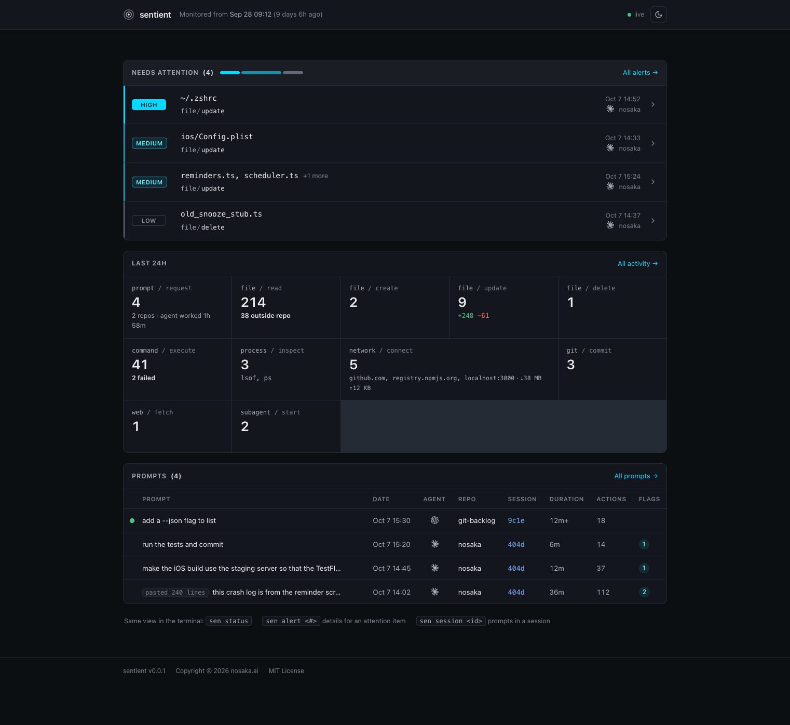
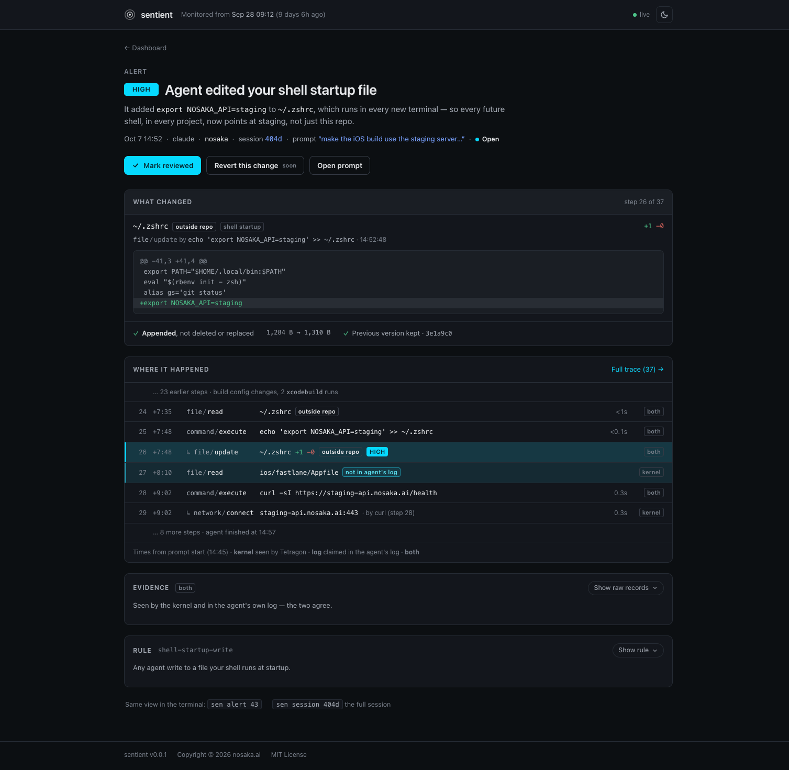

A simple prompt can turn into hundreds of actions from a coding agent, most of which you never see. Sentient captures each action so you can reconstruct exactly what happened, and when.

The problem
Agents change files through shell commands and scripts that never show up as edits in the chat, and the commands you do see can be quite cryptic. Sentient keeps an audit trail of what actually happened and surfaces the risky operations.
sed -i -e '357,362d' -e '356a\ <div class="sevbar" role="img" aria-label="1 high, 2 medium, 1 low" title="1 high · 2 medium · 1 low"><span class="h"></span><span class="m"></span><span class="l"></span></div>' -e '348,351d' -e '150a .card-head .sevbar { margin: 0 0 0 auto; width: 160px; }' dashboard-14.html && sed -n '146,152p' dashboard-14.html && sed -n '/<!-- NEEDS ATTENTION -->/,/<ul/p' dashboard-14.htmlA real command from a coding agent session. Which lines did it delete?
From one developer's own coding agent history.
How it works
Sentient captures all actions in an independent, tamper-evident record.
File, process and network events are captured with eBPF through Tetragon. The agent runs as a regular user and can't edit or switch off the record.
Session logs supply the context: which prompt led to each action, and the reason the agent gave.
Summaries, diffs and severity come from plain rules, not another model. Risky changes, like edits outside the repo, rise to the top.
Dashboard
Run sen serve for a local dashboard. Drill into any flagged change to see the diff, the command and the prompt behind it.

Features
Review your agent's work with the complete record, not just the chat.
Files read, created, changed and deleted. Commands run, processes touched, network connections made, source control operations, etc.
Edits outside the repo, deleted files, sudo and changes to shell profiles rise to the top, ranked high, medium or low.
Long pipelines and inline scripts are broken down into what they actually touched.
See which prompt and session led to each change, so you know why it happened.
See exactly which lines were added and removed in each file, including files outside the repo.
sen status for a quick summary. A web dashboard you can open from your phone.
Principles
Architecture
sentientdThe monitor. Runs as root under systemd, so the agent can't stop it or tamper with its records.
senThe CLI. Runs as you and asks the monitor what happened. sen status gives the summary.
sen serveThe dashboard, on localhost only. Reach it from your phone over an SSH tunnel or Tailscale.
Try it
Linux only for now. Prebuilt binaries will be on the releases page. To build, you need Go 1.26.
git clone https://github.com/nosaka4i/sentient cd sentient make build # bin/sen, bin/sentientd # then install sentientd as a systemd service (see the guide)